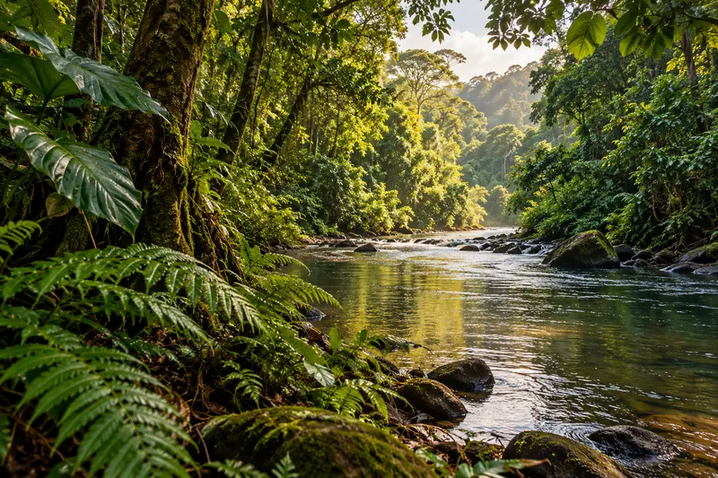

FÖLDÜNK ZÖLD FOLYOSÓI
Esőerdők a térképen
Járd be a trópusi erdők távoli vidékeit! Válassz egy régiót, és nézd meg, hol találkozik a sűrű lombkorona folyókkal, hegyekkel és partvidékekkel.
Felfedezés a térképen07megjelölt helyszín
04földrajzi térség
01interaktív térkép
01 / VÁLASSZ RÉGIÓT
A trópusi erdők nyomában
Szűrj térség szerint, vagy válassz egy helyszínt a listából a térkép megnyitásához.
7 felfedezésre váró hely
INTERAKTÍV VILÁGTÉRKÉP
Nagyítás: görgővel vagy a + / − gombokkal
A térkép betöltése folyamatban…
A jelölők tájékoztató jelleggel mutatnak be néhány ismert esőerdei térséget. A térképen a nagyítással fedezheted fel a környező tájakat.